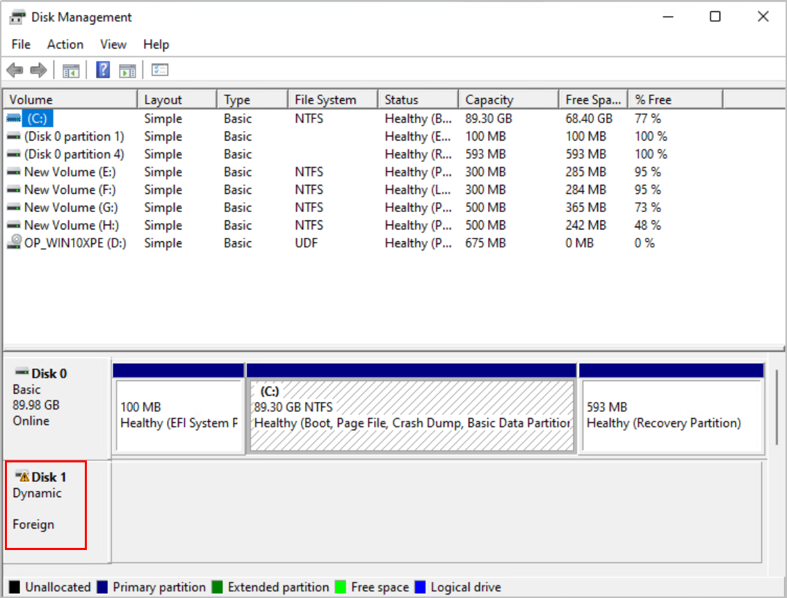

Bare metal restoration of a dynamic disk is performed in the WinPE system. After the restoration is complete, the OS considers the disk as a foreign dynamic disk. As a result, some disks are in the Foreign state after the Windows OS is restored.
Prerequisites
You have logged in to the Windows OS.
Procedure
- In Windows Server 2016 (as an example), press Windows+R to open the Run dialog box.
- In the Run dialog box, enter diskmgmt.msc to access the Disk Management page, as shown in Figure 1.
Figure 1 Disk Management
- Right-click the foreign disk and choose Import Foreign Disks from the shortcut menu.
- In the Import Foreign Disks dialog box, select the disk group and click OK.
Copyright © Huawei Technologies Co., Ltd.